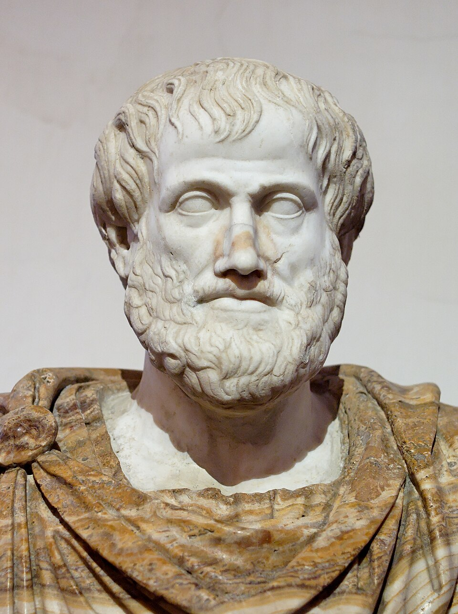
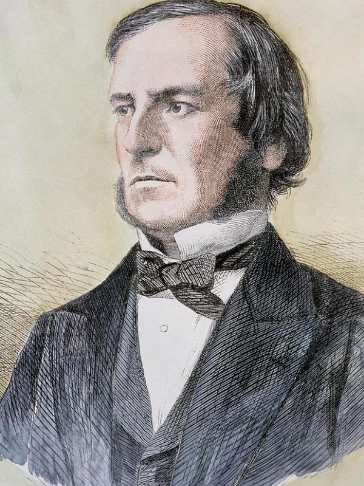

The flip of "x > 5" is NOT "x < 5" — it's x ≤ 5. One single number (5 itself) is the whole difference. "x² = 25, so x = 5" sounds airtight — until x = −5 walks into the room. Solve x/(x − 2) = 2/(x − 2) and algebra cheerfully hands you x = 2 — an answer that makes the original equation EXPLODE. A knight always tells the truth. A knave always lies. One if-then sentence can expose them both.
Those four lines are logic in action — the study of what MUST be true. The first is a trap that fools most high schoolers. The second is the real reason your algebra teacher keeps saying "check your solutions!" — by the end of this lesson you'll know exactly which algebra moves are safe two-way doors and which are one-way traps. The third shows what happens when you multiply by something that could be zero: a one-way move that manufactures a fake solution out of thin air. The fourth is the key to a family of puzzles that feel like magic until you know the method.
Why do people care? Because logic is the operating system underneath ALL of math. Every proof ever written is built from AND, OR, NOT, and IF–THEN. So is every line of code ever written. And here's the part that matters now that you work with variables: solving an equation IS logic. An equation like 2x + 3 = 15 is really a question — "for which x is this true?" — and every step you take to solve it is a promise about what must be true. Get the logic right, and algebra stops being a bag of tricks and becomes a machine you understand.
A fair warning: this lesson goes further than most logic courses. You'll meet ideas many students don't see until a college proofs class — the symbols ∀ and ∃, contrapositives (not just as a trick but as a PROOF TOOL), De Morgan's laws, two-way promises, and the true reason squaring both sides — or canceling x — can manufacture fake solutions. Take your time. Hard just means "takes more than one step" — and we will take every single step together, with the reason for each.
In this lesson, you will:
- 1.Learn what a statement is — and why an equation is a statement-MAKER with a truth set
- 2.Learn to flip anything with NOT — comparisons like x > 5, and the ALL/SOME flip in symbols
- 3.Learn AND and OR — compound inequalities, absolute value, De Morgan's laws, and systems of equations
- 4.Learn the one and only way an IF–THEN promise can break — and hunt counterexamples with negatives, fractions, and zero
- 5.Learn the family of four relatives of a promise — and the two-way promise "if and only if"
- 6.Learn ALL/SOME/NONE circle logic — and prove "for ALL x" claims with letters, including one proof by contrapositive
- 7.Learn the two argument moves that always work, the two fakes — and why squaring, or multiplying by zero, demands a final check
- 8.Learn to crack knight-and-knave puzzles where the statements use AND, OR, and IF–THEN — including one puzzle with TWO surviving cases
- 9.Learn the common mistakes so you never make them
- 10.Practice with 100 problems at the end — including puzzles for you to design!
How to use this lesson: Read the sections in order. Each section starts with the key idea you'll learn in it. Try every "Your Turn" box with a pencil and paper — in logic, the answer often feels obvious until you check it carefully. Ready? Let's go!
📸 Pictures

A marble bust of Aristotle (384–322 BC), the ancient Greek thinker who wrote down some of the very first rules of logic. See source ↓

George Boole (1815–1864) turned logic into algebra with just TRUE and FALSE. Every computer today runs on his "Boolean logic"! See source ↓
🗺️ Your lesson map
Statements and Open Sentences — The Raw Material of Logic 🧩Lesson 2
NOT — The Art of Flipping Anything 🎯Lesson 3
AND, OR — Compound Inequalities, Absolute Value, De Morgan, and Systems 🔍Lesson 4
IF–THEN — The Promise Machine (with Counterexample Hunting) ⚡Lesson 5
The Family of Four — Converse, Inverse, Contrapositive, and the Two-Way Promise 🌟Lesson 6
ALL, SOME, NONE — Circle Logic, and Proving "For ALL x" with Letters 🛠️Lesson 7
Arguments — Two Moves That Work, Two Fakes, and the Danger of One-Way Steps 🎨Lesson 8
Knights and Knaves — When the Statements Use AND, OR, and IF–THEN ⚠️Lesson 9
Watch Out! Common Mistakes 🧠Lesson 10
Review — The Big Picture 🏋️Practice Problems
100 problems to try ✅Answer Key
Check your work
📚 Picture Sources
- Picture 1 · Aristotle Altemps Inv8575. By After Lysippos. Public domain. From Wikimedia Commons: https://commons.wikimedia.org/wiki/File:Aristotle_Altemps_Inv8575.jpg
- Picture 2 · George Boole color. By Unknown photographer. Public domain. From Wikimedia Commons: https://commons.wikimedia.org/wiki/File:George_Boole_color.jpg